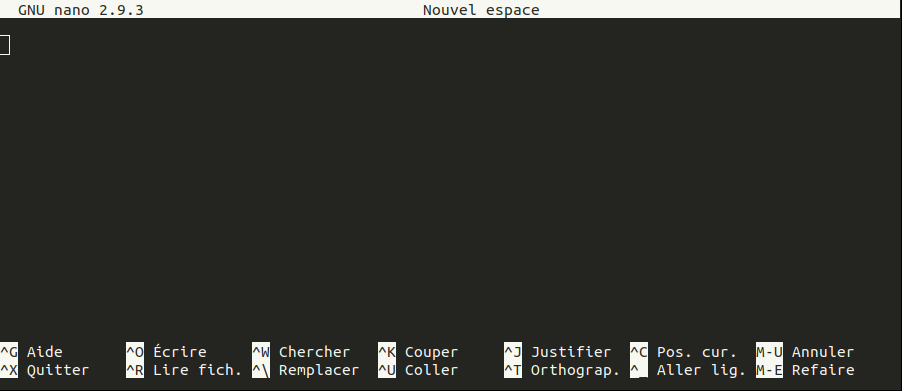

<!DOCTYPE html>


<html lang="en" >

  <head>
    <meta charset="utf-8" />
    <meta name="viewport" content="width=device-width, initial-scale=1.0" /><meta name="generator" content="Docutils 0.18.1: http://docutils.sourceforge.net/" />

    <title>Tuto 1 : un aperçu du shell Unix &#8212; Unix tutorial</title>
  
  
  
  <script data-cfasync="false">
    document.documentElement.dataset.mode = localStorage.getItem("mode") || "";
    document.documentElement.dataset.theme = localStorage.getItem("theme") || "light";
  </script>
  
  <!-- Loaded before other Sphinx assets -->
  <link href="../_static/styles/theme.css?digest=12da95d707ffb74b382d" rel="stylesheet" />
<link href="../_static/styles/bootstrap.css?digest=12da95d707ffb74b382d" rel="stylesheet" />
<link href="../_static/styles/pydata-sphinx-theme.css?digest=12da95d707ffb74b382d" rel="stylesheet" />

  
  <link href="../_static/vendor/fontawesome/6.1.2/css/all.min.css?digest=12da95d707ffb74b382d" rel="stylesheet" />
  <link rel="preload" as="font" type="font/woff2" crossorigin href="../_static/vendor/fontawesome/6.1.2/webfonts/fa-solid-900.woff2" />
<link rel="preload" as="font" type="font/woff2" crossorigin href="../_static/vendor/fontawesome/6.1.2/webfonts/fa-brands-400.woff2" />
<link rel="preload" as="font" type="font/woff2" crossorigin href="../_static/vendor/fontawesome/6.1.2/webfonts/fa-regular-400.woff2" />

    <link rel="stylesheet" type="text/css" href="../_static/pygments.css" />
    <link rel="stylesheet" href="../_static/styles/sphinx-book-theme.css?digest=14f4ca6b54d191a8c7657f6c759bf11a5fb86285" type="text/css" />
    <link rel="stylesheet" type="text/css" href="../_static/togglebutton.css" />
    <link rel="stylesheet" type="text/css" href="../_static/copybutton.css" />
    <link rel="stylesheet" type="text/css" href="../_static/mystnb.4510f1fc1dee50b3e5859aac5469c37c29e427902b24a333a5f9fcb2f0b3ac41.css" />
    <link rel="stylesheet" type="text/css" href="../_static/sphinx-thebe.css" />
    <link rel="stylesheet" type="text/css" href="../_static/design-style.4045f2051d55cab465a707391d5b2007.min.css" />
  
  <!-- Pre-loaded scripts that we'll load fully later -->
  <link rel="preload" as="script" href="../_static/scripts/bootstrap.js?digest=12da95d707ffb74b382d" />
<link rel="preload" as="script" href="../_static/scripts/pydata-sphinx-theme.js?digest=12da95d707ffb74b382d" />

    <script data-url_root="../" id="documentation_options" src="../_static/documentation_options.js"></script>
    <script src="../_static/jquery.js"></script>
    <script src="../_static/underscore.js"></script>
    <script src="../_static/_sphinx_javascript_frameworks_compat.js"></script>
    <script src="../_static/doctools.js"></script>
    <script src="../_static/clipboard.min.js"></script>
    <script src="../_static/copybutton.js"></script>
    <script src="../_static/scripts/sphinx-book-theme.js?digest=5a5c038af52cf7bc1a1ec88eea08e6366ee68824"></script>
    <script>let toggleHintShow = 'Click to show';</script>
    <script>let toggleHintHide = 'Click to hide';</script>
    <script>let toggleOpenOnPrint = 'true';</script>
    <script src="../_static/togglebutton.js"></script>
    <script>var togglebuttonSelector = '.toggle, .admonition.dropdown';</script>
    <script src="../_static/design-tabs.js"></script>
    <script>const THEBE_JS_URL = "https://unpkg.com/thebe@0.8.2/lib/index.js"
const thebe_selector = ".thebe,.cell"
const thebe_selector_input = "pre"
const thebe_selector_output = ".output, .cell_output"
</script>
    <script async="async" src="../_static/sphinx-thebe.js"></script>
    <script>DOCUMENTATION_OPTIONS.pagename = 'tutorial_1/tutorial';</script>
    <link rel="index" title="Index" href="../genindex.html" />
    <link rel="search" title="Search" href="../search.html" />
    <link rel="next" title="Ressources complémentaires" href="../more.html" />
    <link rel="prev" title="Connexion au Jupyter Hub de l’IFB" href="../connection.html" />
  <meta name="viewport" content="width=device-width, initial-scale=1"/>
  <meta name="docsearch:language" content="en"/>
  </head>
  
  
  <body data-bs-spy="scroll" data-bs-target=".bd-toc-nav" data-offset="180" data-bs-root-margin="0px 0px -60%" data-default-mode="">

  
  
  <a class="skip-link" href="#main-content">Skip to main content</a>
  
  <input type="checkbox"
          class="sidebar-toggle"
          name="__primary"
          id="__primary"/>
  <label class="overlay overlay-primary" for="__primary"></label>
  
  <input type="checkbox"
          class="sidebar-toggle"
          name="__secondary"
          id="__secondary"/>
  <label class="overlay overlay-secondary" for="__secondary"></label>
  
  <div class="search-button__wrapper">
    <div class="search-button__overlay"></div>
    <div class="search-button__search-container">
<form class="bd-search d-flex align-items-center"
      action="../search.html"
      method="get">
  <i class="fa-solid fa-magnifying-glass"></i>
  <input type="search"
         class="form-control"
         name="q"
         id="search-input"
         placeholder="Search this book..."
         aria-label="Search this book..."
         autocomplete="off"
         autocorrect="off"
         autocapitalize="off"
         spellcheck="false"/>
  <span class="search-button__kbd-shortcut"><kbd class="kbd-shortcut__modifier">Ctrl</kbd>+<kbd>K</kbd></span>
</form></div>
  </div>
  
    <nav class="bd-header navbar navbar-expand-lg bd-navbar">
    </nav>
  
  <div class="bd-container">
    <div class="bd-container__inner bd-page-width">
      
      <div class="bd-sidebar-primary bd-sidebar">
        

  
  <div class="sidebar-header-items sidebar-primary__section">
    
    
    
    
  </div>
  
    <div class="sidebar-primary-items__start sidebar-primary__section">
        <div class="sidebar-primary-item">
  

<a class="navbar-brand logo" href="../intro.html">
  
  
  
  
    
    
      
    
    
    
    <script>document.write(``);</script>
  
  
</a></div>
        <div class="sidebar-primary-item"><nav class="bd-links" id="bd-docs-nav" aria-label="Main">
    <div class="bd-toc-item navbar-nav active">
        
        <ul class="nav bd-sidenav bd-sidenav__home-link">
            <li class="toctree-l1">
                <a class="reference internal" href="../intro.html">
                    Bienvenue !
                </a>
            </li>
        </ul>
        <ul class="current nav bd-sidenav">
<li class="toctree-l1"><a class="reference internal" href="../connection.html">Connexion au Jupyter Hub de l’IFB</a></li>
<li class="toctree-l1 current active"><a class="current reference internal" href="#">Tuto 1 : un  aperçu du shell Unix</a></li>
<li class="toctree-l1"><a class="reference internal" href="../more.html">Ressources complémentaires</a></li>
</ul>

    </div>
</nav></div>
    </div>
  
  
  <div class="sidebar-primary-items__end sidebar-primary__section">
  </div>
  
  <div id="rtd-footer-container"></div>


      </div>
      
      <main id="main-content" class="bd-main">
        
        

<div class="sbt-scroll-pixel-helper"></div>

          <div class="bd-content">
            <div class="bd-article-container">
              
              <div class="bd-header-article">
<div class="header-article-items header-article__inner">
  
    <div class="header-article-items__start">
      
        <div class="header-article-item"><label class="sidebar-toggle primary-toggle btn btn-sm" for="__primary" title="Toggle primary sidebar" data-bs-placement="bottom" data-bs-toggle="tooltip">
  <span class="fa-solid fa-bars"></span>
</label></div>
      
    </div>
  
  
    <div class="header-article-items__end">
      
        <div class="header-article-item">

<div class="article-header-buttons">


<div class="dropdown dropdown-source-buttons">
  <button class="btn dropdown-toggle" type="button" data-bs-toggle="dropdown" aria-expanded="false" aria-label="Source repositories">
    <i class="fab fa-github"></i>
  </button>
  <ul class="dropdown-menu">
      
      
      
      <li><a href="https://github.com/pierrepo/unix-tutorial" target="_blank"
   class="btn btn-sm btn-source-repository-button dropdown-item"
   title="Source repository"
   data-bs-placement="left" data-bs-toggle="tooltip"
>
  

<span class="btn__icon-container">
  <i class="fab fa-github"></i>
  </span>
<span class="btn__text-container">Repository</span>
</a>
</li>
      
      
      
      
      <li><a href="https://github.com/pierrepo/unix-tutorial/issues/new?title=Issue%20on%20page%20%2Ftutorial_1/tutorial.html&body=Your%20issue%20content%20here." target="_blank"
   class="btn btn-sm btn-source-issues-button dropdown-item"
   title="Open an issue"
   data-bs-placement="left" data-bs-toggle="tooltip"
>
  

<span class="btn__icon-container">
  <i class="fas fa-lightbulb"></i>
  </span>
<span class="btn__text-container">Open issue</span>
</a>
</li>
      
  </ul>
</div>


<div class="dropdown dropdown-download-buttons">
  <button class="btn dropdown-toggle" type="button" data-bs-toggle="dropdown" aria-expanded="false" aria-label="Download this page">
    <i class="fas fa-download"></i>
  </button>
  <ul class="dropdown-menu">
      
      
      
      <li><a href="../_sources/tutorial_1/tutorial.md" target="_blank"
   class="btn btn-sm btn-download-source-button dropdown-item"
   title="Download source file"
   data-bs-placement="left" data-bs-toggle="tooltip"
>
  

<span class="btn__icon-container">
  <i class="fas fa-file"></i>
  </span>
<span class="btn__text-container">.md</span>
</a>
</li>
      
      
      
      
      <li>
<button onclick="window.print()"
  class="btn btn-sm btn-download-pdf-button dropdown-item"
  title="Print to PDF"
  data-bs-placement="left" data-bs-toggle="tooltip"
>
  

<span class="btn__icon-container">
  <i class="fas fa-file-pdf"></i>
  </span>
<span class="btn__text-container">.pdf</span>
</button>
</li>
      
  </ul>
</div>


<button onclick="toggleFullScreen()"
  class="btn btn-sm btn-fullscreen-button"
  title="Fullscreen mode"
  data-bs-placement="bottom" data-bs-toggle="tooltip"
>
  

<span class="btn__icon-container">
  <i class="fas fa-expand"></i>
  </span>

</button>


<script>
document.write(`
  <button class="theme-switch-button btn btn-sm btn-outline-primary navbar-btn rounded-circle" title="light/dark" aria-label="light/dark" data-bs-placement="bottom" data-bs-toggle="tooltip">
    <span class="theme-switch" data-mode="light"><i class="fa-solid fa-sun"></i></span>
    <span class="theme-switch" data-mode="dark"><i class="fa-solid fa-moon"></i></span>
    <span class="theme-switch" data-mode="auto"><i class="fa-solid fa-circle-half-stroke"></i></span>
  </button>
`);
</script>

<script>
document.write(`
  <button class="btn btn-sm navbar-btn search-button search-button__button" title="Search" aria-label="Search" data-bs-placement="bottom" data-bs-toggle="tooltip">
    <i class="fa-solid fa-magnifying-glass"></i>
  </button>
`);
</script>
<label class="sidebar-toggle secondary-toggle btn btn-sm" for="__secondary"title="Toggle secondary sidebar" data-bs-placement="bottom" data-bs-toggle="tooltip">
    <span class="fa-solid fa-list"></span>
</label>
</div></div>
      
    </div>
  
</div>
</div>
              
              

<div id="jb-print-docs-body" class="onlyprint">
    <h1>Tuto 1 : un  aperçu du shell Unix</h1>
    <!-- Table of contents -->
    <div id="print-main-content">
        <div id="jb-print-toc">
            
            <div>
                <h2> Contents </h2>
            </div>
            <nav aria-label="Page">
                <ul class="visible nav section-nav flex-column">
<li class="toc-h2 nav-item toc-entry"><a class="reference internal nav-link" href="#invite-de-commande">1. Invite de commande</a></li>
<li class="toc-h2 nav-item toc-entry"><a class="reference internal nav-link" href="#parcourir-les-repertoires-et-les-fichiers">2. Parcourir les répertoires et les fichiers</a><ul class="nav section-nav flex-column">
<li class="toc-h3 nav-item toc-entry"><a class="reference internal nav-link" href="#preparer-les-donnees">Préparer les données</a></li>
<li class="toc-h3 nav-item toc-entry"><a class="reference internal nav-link" href="#savoir-ou-on-se-trouve-pwd">Savoir où on se trouve : <code class="docutils literal notranslate"><span class="pre">pwd</span></code></a></li>
<li class="toc-h3 nav-item toc-entry"><a class="reference internal nav-link" href="#afficher-le-contenu-d-un-repertoire-ls">Afficher le contenu d’un répertoire : <code class="docutils literal notranslate"><span class="pre">ls</span></code></a></li>
<li class="toc-h3 nav-item toc-entry"><a class="reference internal nav-link" href="#se-documenter-man-et-help">Se documenter : <code class="docutils literal notranslate"><span class="pre">man</span></code> et <code class="docutils literal notranslate"><span class="pre">--help</span></code></a></li>
<li class="toc-h3 nav-item toc-entry"><a class="reference internal nav-link" href="#preter-attention-aux-noms-de-fichiers-et-repertoires">Prêter attention aux noms de fichiers et répertoires</a></li>
<li class="toc-h3 nav-item toc-entry"><a class="reference internal nav-link" href="#se-deplacer-cd">Se déplacer : <code class="docutils literal notranslate"><span class="pre">cd</span></code></a></li>
<li class="toc-h3 nav-item toc-entry"><a class="reference internal nav-link" href="#creer-un-repertoire-mkdir">Créer un répertoire : <code class="docutils literal notranslate"><span class="pre">mkdir</span></code></a></li>
<li class="toc-h3 nav-item toc-entry"><a class="reference internal nav-link" href="#copier-cp">Copier : <code class="docutils literal notranslate"><span class="pre">cp</span></code></a></li>
<li class="toc-h3 nav-item toc-entry"><a class="reference internal nav-link" href="#renommer-et-deplacer-mv">Renommer et déplacer : <code class="docutils literal notranslate"><span class="pre">mv</span></code></a></li>
<li class="toc-h3 nav-item toc-entry"><a class="reference internal nav-link" href="#supprimer-rm">Supprimer : <code class="docutils literal notranslate"><span class="pre">rm</span></code></a></li>
<li class="toc-h3 nav-item toc-entry"><a class="reference internal nav-link" href="#automatiser-un-peu">Automatiser (un peu)</a></li>
</ul>
</li>
<li class="toc-h2 nav-item toc-entry"><a class="reference internal nav-link" href="#trucs-et-astuces">3. Trucs et astuces</a><ul class="nav section-nav flex-column">
<li class="toc-h3 nav-item toc-entry"><a class="reference internal nav-link" href="#rappel-des-anciennes-commandes">Rappel des anciennes commandes</a></li>
<li class="toc-h3 nav-item toc-entry"><a class="reference internal nav-link" href="#completion-automatique">Complétion automatique</a></li>
<li class="toc-h3 nav-item toc-entry"><a class="reference internal nav-link" href="#arreter-une-commande-en-cours">Arrêter une commande en cours</a></li>
<li class="toc-h3 nav-item toc-entry"><a class="reference internal nav-link" href="#copier-coller">Copier / coller</a></li>
</ul>
</li>
<li class="toc-h2 nav-item toc-entry"><a class="reference internal nav-link" href="#explorer-le-contenu-de-fichiers">4. Explorer le contenu de fichiers</a></li>
<li class="toc-h2 nav-item toc-entry"><a class="reference internal nav-link" href="#creer-ou-editer-un-fichier-texte">5. Créer ou éditer un fichier texte</a></li>
<li class="toc-h2 nav-item toc-entry"><a class="reference internal nav-link" href="#manipuler-des-donnees">6. Manipuler des données</a><ul class="nav section-nav flex-column">
<li class="toc-h3 nav-item toc-entry"><a class="reference internal nav-link" href="#compter-wc">Compter : <code class="docutils literal notranslate"><span class="pre">wc</span></code></a></li>
<li class="toc-h3 nav-item toc-entry"><a class="reference internal nav-link" href="#trier-sort">Trier : <code class="docutils literal notranslate"><span class="pre">sort</span></code></a></li>
<li class="toc-h3 nav-item toc-entry"><a class="reference internal nav-link" href="#trouver-les-elements-uniques-uniq">Trouver les éléments uniques : <code class="docutils literal notranslate"><span class="pre">uniq</span></code></a></li>
<li class="toc-h3 nav-item toc-entry"><a class="reference internal nav-link" href="#extraire-un-colonne-cut">Extraire un colonne : <code class="docutils literal notranslate"><span class="pre">cut</span></code></a></li>
<li class="toc-h3 nav-item toc-entry"><a class="reference internal nav-link" href="#gerer-les-flux-redirection-et-emboitement">Gérer les flux : redirection et emboîtement</a><ul class="nav section-nav flex-column">
<li class="toc-h4 nav-item toc-entry"><a class="reference internal nav-link" href="#etape-1-cut">Étape 1 (<code class="docutils literal notranslate"><span class="pre">cut</span></code>)</a></li>
<li class="toc-h4 nav-item toc-entry"><a class="reference internal nav-link" href="#etape-2-sort">Étape 2 (<code class="docutils literal notranslate"><span class="pre">sort</span></code>)</a></li>
<li class="toc-h4 nav-item toc-entry"><a class="reference internal nav-link" href="#etape-3-uniq">Étape 3 (<code class="docutils literal notranslate"><span class="pre">uniq</span></code>)</a></li>
</ul>
</li>
</ul>
</li>
<li class="toc-h2 nav-item toc-entry"><a class="reference internal nav-link" href="#chercher">7. Chercher</a><ul class="nav section-nav flex-column">
<li class="toc-h3 nav-item toc-entry"><a class="reference internal nav-link" href="#chercher-dans-des-fichiers-grep">Chercher dans des fichiers : <code class="docutils literal notranslate"><span class="pre">grep</span></code></a></li>
<li class="toc-h3 nav-item toc-entry"><a class="reference internal nav-link" href="#petit-defi">Petit défi</a></li>
<li class="toc-h3 nav-item toc-entry"><a class="reference internal nav-link" href="#chercher-des-fichiers-find">Chercher des fichiers : <code class="docutils literal notranslate"><span class="pre">find</span></code></a></li>
</ul>
</li>
<li class="toc-h2 nav-item toc-entry"><a class="reference internal nav-link" href="#se-souvenir">8. Se souvenir</a></li>
</ul>
            </nav>
        </div>
    </div>
</div>

              
                
<div id="searchbox"></div>
                <article class="bd-article" role="main">
                  
  <section class="tex2jax_ignore mathjax_ignore" id="tuto-1-un-apercu-du-shell-unix">
<h1>Tuto 1 : un  aperçu du shell Unix<a class="headerlink" href="#tuto-1-un-apercu-du-shell-unix" title="Permalink to this heading">#</a></h1>
<p>Un <em>shell</em> est un programme qui attend un ordre de la part de l’utilisateur, exécute cet ordre, affiche le résultat puis attend à nouveau un ordre. En anglais on parle de <em>REPL</em> pour <em>Read Execute Print Loop</em>. Il existe plusieurs <em>shells</em> : <em>Bash</em>, <em>csh</em>, <em>zsh</em>… Ici on ne parlera que du <em>shell</em> <em>Bash</em> qui est le plus utilisé. Cela dit, toutes les commandes présentées ici sont communes à tous les <em>shells</em> Unix.</p>
<p>Lorsqu’on donne des ordres à un <em>shell</em>, on utilise ni menu, ni bouton, ni case à cocher. Tous les ordres sont <strong>écrits</strong> au <em>shell</em>.</p>
<p>Le <em>shell</em> fonctionne sur un ordinateur, qui n’a aucune capacité d’abstraction ni d’intuition. Pour que les ordres donnés au <em>shell</em> soient compris et exécutés, il faut respecter des règles bien précises :</p>
<ol class="arabic simple">
<li><p>Respecter la casse, c’est-à-dire l’utilisation des majuscules et des minuscules. Par exemple la commande <code class="docutils literal notranslate"><span class="pre">ls</span></code> existe mais pas <code class="docutils literal notranslate"><span class="pre">LS</span></code> ou <code class="docutils literal notranslate"><span class="pre">Ls</span></code>.</p></li>
<li><p>Comprendre que le caractère espace est utilisé pour séparer l’instruction des options et des arguments et que par conséquent <strong>ce caractère ne doit plus être utilisé</strong> dans les noms de fichiers ou de répertoires.</p></li>
</ol>
<p>Enfin, un terminal (ou une console) est un logiciel graphique qui lance un <em>shell</em>. C’est ce dernier (le <em>shell</em>) qui va exécuter vos ordres.</p>
<section id="invite-de-commande">
<h2>1. Invite de commande<a class="headerlink" href="#invite-de-commande" title="Permalink to this heading">#</a></h2>
<p>Lorsque vous lancez un <em>shell</em>, l’invite de commande, c’est-à-dire la zone à gauche du curseur, ressemble à quelque chose du type :</p>
<div class="highlight-default notranslate"><div class="highlight"><pre><span></span>pierre@jeera:~$
</pre></div>
</div>
<p>ou</p>
<div class="highlight-default notranslate"><div class="highlight"><pre><span></span>pierre@orange $
</pre></div>
</div>
<p>ou bien encore</p>
<div class="highlight-default notranslate"><div class="highlight"><pre><span></span>duo@DU_OMICS: $
</pre></div>
</div>
<p>voire</p>
<div class="highlight-default notranslate"><div class="highlight"><pre><span></span>toto $
</pre></div>
</div>
<p>Par convention, l’invite de commande sera représentée dans la suite de ce document par le caractère dollar «<code class="docutils literal notranslate"><span class="pre">$</span></code>» en tout début de ligne :</p>
<div class="highlight-default notranslate"><div class="highlight"><pre><span></span>$
</pre></div>
</div>
<p>Pour reproduire les commandes présentées, il ne faut pas taper ce caractère en début de ligne. Ainsi,</p>
<div class="highlight-default notranslate"><div class="highlight"><pre><span></span>$ pwd
</pre></div>
</div>
<p>signifie : tapez l’instruction <code class="docutils literal notranslate"><span class="pre">pwd</span></code> dans le <em>shell</em> (sans le <code class="docutils literal notranslate"><span class="pre">$</span></code>), puis validez cette commande en pressant la touche <kbd>Entrée</kbd>.</p>
</section>
<section id="parcourir-les-repertoires-et-les-fichiers">
<h2>2. Parcourir les répertoires et les fichiers<a class="headerlink" href="#parcourir-les-repertoires-et-les-fichiers" title="Permalink to this heading">#</a></h2>
<section id="preparer-les-donnees">
<h3>Préparer les données<a class="headerlink" href="#preparer-les-donnees" title="Permalink to this heading">#</a></h3>
<p>Pour reproduire les exemples suivants, vous allez préparer les données que vous allez utiliser. Déplacez vous tout d’abord dans votre répertoire utilisateur avec la commande <code class="docutils literal notranslate"><span class="pre">cd</span></code> :</p>
<div class="highlight-bash notranslate"><div class="highlight"><pre><span></span>$<span class="w"> </span><span class="nb">cd</span>
</pre></div>
</div>
<p>puis exécutez les commandes suivant :</p>
<div class="highlight-bash notranslate"><div class="highlight"><pre><span></span>$<span class="w"> </span>wget<span class="w"> </span>https://github.com/pierrepo/unix-tutorial/raw/master/demo/unix.tgz
$<span class="w"> </span>tar<span class="w"> </span>zxvf<span class="w"> </span>unix.tgz
$<span class="w"> </span><span class="nb">cd</span><span class="w"> </span>unix
</pre></div>
</div>
<div class="admonition warning">
<p class="admonition-title">Warning</p>
<p>Ne tapez pas le <code class="docutils literal notranslate"><span class="pre">$</span></code> en début de ligne et faites attention aux majuscules et au minuscules.</p>
</div>
<p>Ces commandes seront en partie expliquées plus loin. Pour ne pas réécrire complètement ces commandes, voici comment copier / coller entre Windows et le <em>shell</em> Linux :</p>
<ul class="simple">
<li><p>Pour copier depuis Windows (<kbd>Ctrl</kbd>+<kbd>C</kbd>) puis coller dans le <em>shell</em> : clic droit de la souris.</p></li>
<li><p>Pour copier depuis le <em>shell</em> (<kbd>Ctrl</kbd>+<kbd>Maj</kbd>+<kbd>C</kbd>) puis coller dans Windows (<kbd>Ctrl</kbd>+<kbd>V</kbd>)</p></li>
</ul>
</section>
<section id="savoir-ou-on-se-trouve-pwd">
<h3>Savoir où on se trouve : <code class="docutils literal notranslate"><span class="pre">pwd</span></code><a class="headerlink" href="#savoir-ou-on-se-trouve-pwd" title="Permalink to this heading">#</a></h3>
<p>La première commande à connaître est la commande <code class="docutils literal notranslate"><span class="pre">pwd</span></code> qui signifie <em>print working directory</em> et qui affiche le nom du répertoire courant.</p>
<p>Par exemple :</p>
<div class="highlight-default notranslate"><div class="highlight"><pre><span></span>$ pwd
/mnt/c/Users/omics/unix
</pre></div>
</div>
<p>Cela signifie qu’on se trouve actuellement dans le répertoire `/mnt/c/Users/omics/unix.</p>
<p>Sous Unix, les répertoires et les fichiers sont organisés sous forme d’une structure en arbre. On parle d’arborescence (voir l’<a class="reference external" href="http://swcarpentry.github.io/shell-novice/02-filedir/index.html">illustration</a> de Software Carpentry).</p>
<p>Le répertoire dont dépendent tous les autres est le <code class="docutils literal notranslate"><span class="pre">/</span></code> qu’on appelle la « racine » (<em>root</em> en anglais), les différents sous-répertoires sont séparés les uns des autres par le caractère <code class="docutils literal notranslate"><span class="pre">/</span></code> (le même caractère que la racine).</p>
<p>Dans le cas de <code class="docutils literal notranslate"><span class="pre">/mnt/c/Users/omics/unix</span></code> :</p>
<ul class="simple">
<li><p>on se trouve dans le répertoire <code class="docutils literal notranslate"><span class="pre">unix</span></code>,</p></li>
<li><p>qui est lui-même un sous-répertoire du répertoire <code class="docutils literal notranslate"><span class="pre">omics</span></code>,</p></li>
<li><p>qui est lui-même un sous-répertoire du répertoire <code class="docutils literal notranslate"><span class="pre">Users</span></code>,</p></li>
<li><p>qui est lui-même un sous-répertoire du répertoire <code class="docutils literal notranslate"><span class="pre">c</span></code>,</p></li>
<li><p>qui est lui-même un sous-répertoire du répertoire <code class="docutils literal notranslate"><span class="pre">mnt</span></code>,</p></li>
<li><p>qui est lui-même un sous-répertoire du répertoire <code class="docutils literal notranslate"><span class="pre">/</span></code> (la racine).</p></li>
</ul>
<p><code class="docutils literal notranslate"><span class="pre">/mnt/c/Users/omics/unix</span></code> est aussi appelé un « chemin » car il indique la succession des répertoires à suivre pour arriver jusqu’à <code class="docutils literal notranslate"><span class="pre">unix</span></code>. D’abord la racine <code class="docutils literal notranslate"><span class="pre">/</span></code>, puis <code class="docutils literal notranslate"><span class="pre">mnt</span></code>, puis <code class="docutils literal notranslate"><span class="pre">c</span></code>, puis <code class="docutils literal notranslate"><span class="pre">Users</span></code>, puis <code class="docutils literal notranslate"><span class="pre">omics</span></code> et enfin <code class="docutils literal notranslate"><span class="pre">unix</span></code>.</p>
<p>⚠️ <strong>Attention</strong> ⚠️ Ne confondez pas « <code class="docutils literal notranslate"><span class="pre">/</span></code> » qui tout au début d’un chemin signifie la racine de « <code class="docutils literal notranslate"><span class="pre">/</span></code> » qui sépare deux répertoires successifs.</p>
<p>Lorsqu’un chemin débute par <code class="docutils literal notranslate"><span class="pre">/</span></code> (la racine), on parle de <strong>chemin absolu</strong>. Il existe aussi des <strong>chemins relatifs</strong> (donc qui ne débutent pas par <code class="docutils literal notranslate"><span class="pre">/</span></code>) que l’on verra plus tard.</p>
</section>
<section id="afficher-le-contenu-d-un-repertoire-ls">
<h3>Afficher le contenu d’un répertoire : <code class="docutils literal notranslate"><span class="pre">ls</span></code><a class="headerlink" href="#afficher-le-contenu-d-un-repertoire-ls" title="Permalink to this heading">#</a></h3>
<p>La commande <code class="docutils literal notranslate"><span class="pre">ls</span></code> (pour <em>list</em>) affiche le contenu d’un répertoire :</p>
<div class="highlight-default notranslate"><div class="highlight"><pre><span></span>$ ls
genomes  paper.pdf  protein.txt  shopping.txt  transferrin.csv	transferrin.tsv
</pre></div>
</div>
<p>On peut modifier le comportement par défaut d’une commande avec une (ou plusieurs) option(s). Cette option est séparée de la commande par un ou plusieurs espaces.</p>
<p>Par exemple avec <code class="docutils literal notranslate"><span class="pre">-F</span></code> :</p>
<div class="highlight-default notranslate"><div class="highlight"><pre><span></span>$ ls -F
genomes/  paper.pdf  protein.txt  shopping.txt	transferrin.csv  transferrin.tsv
</pre></div>
</div>
<p>Le caractère <code class="docutils literal notranslate"><span class="pre">/</span></code> a été ajouté à la fin de <code class="docutils literal notranslate"><span class="pre">genomes</span></code> pour indiquer qu’il s’agit d’un répertoire.</p>
<p>Remarquez que les commandes suivantes donneraient aussi le même résultats :</p>
<div class="highlight-default notranslate"><div class="highlight"><pre><span></span>$ ls  -F
genomes/  paper.pdf  protein.txt  shopping.txt	transferrin.csv  transferrin.tsv
</pre></div>
</div>
<p>et pourquoi pas :</p>
<div class="highlight-default notranslate"><div class="highlight"><pre><span></span>$ ls                                            -F
genomes/  paper.pdf  protein.txt  shopping.txt	transferrin.csv  transferrin.tsv
</pre></div>
</div>
<p>Retenez qu’il faut au moins un espace entre une commande et son option.</p>
<p>Une autre option sympa est l’option <code class="docutils literal notranslate"><span class="pre">-l</span></code> (lettre <em>l</em> en minuscule) qui affiche des informations complémentaires sur le contenu du répertoire :</p>
<div class="highlight-default notranslate"><div class="highlight"><pre><span></span>$ ls -l
total 116
drwxr-xr-x 2 ppoulain omicsschool  4096 Mar 13 08:58 genomes
-rw-r--r-- 1 ppoulain omicsschool 97830 Mar 13 14:34 paper.pdf
-rw-r--r-- 1 ppoulain omicsschool   144 Mar 13 15:00 protein.txt
-rw-r--r-- 1 ppoulain omicsschool    45 Mar 13 09:39 shopping.txt
-rw-r--r-- 1 ppoulain omicsschool   940 Mar 13 14:19 transferrin.csv
-rw-r--r-- 1 ppoulain omicsschool   940 Mar 12 23:47 transferrin.tsv
</pre></div>
</div>
<p>L’option <code class="docutils literal notranslate"><span class="pre">-l</span></code> peut être associée à l’option <code class="docutils literal notranslate"><span class="pre">-h</span></code> pour afficher des tailles en octets, kilo, mega et giga octets.</p>
<div class="highlight-default notranslate"><div class="highlight"><pre><span></span>$ ls -l -h
total 116K
drwxr-xr-x 2 ppoulain omicsschool 4.0K Mar 13 08:58 genomes
-rw-r--r-- 1 ppoulain omicsschool  96K Mar 13 14:34 paper.pdf
-rw-r--r-- 1 ppoulain omicsschool  144 Mar 13 15:00 protein.txt
-rw-r--r-- 1 ppoulain omicsschool   45 Mar 13 09:39 shopping.txt
-rw-r--r-- 1 ppoulain omicsschool  940 Mar 13 14:19 transferrin.csv
-rw-r--r-- 1 ppoulain omicsschool  940 Mar 12 23:47 transferrin.tsv
</pre></div>
</div>
<p>Le fichier <code class="docutils literal notranslate"><span class="pre">paper.pdf</span></code> a une taille de 96 kilo octets.</p>
<p>Les options peuvent aussi être combinées :</p>
<div class="highlight-default notranslate"><div class="highlight"><pre><span></span>$ ls -lh
total 116K
drwxr-xr-x 2 ppoulain omicsschool 4.0K Mar 13 08:58 genomes
-rw-r--r-- 1 ppoulain omicsschool  96K Mar 13 14:34 paper.pdf
-rw-r--r-- 1 ppoulain omicsschool  144 Mar 13 15:00 protein.txt
-rw-r--r-- 1 ppoulain omicsschool   45 Mar 13 09:39 shopping.txt
-rw-r--r-- 1 ppoulain omicsschool  940 Mar 13 14:19 transferrin.csv
-rw-r--r-- 1 ppoulain omicsschool  940 Mar 12 23:47 transferrin.tsv
</pre></div>
</div>
<p>Une combinaison d’options intéressantes est <code class="docutils literal notranslate"><span class="pre">-lhrt</span></code> qui affiche en dernier (en bas de la liste) le fichier modifié le plus récemment :</p>
<div class="highlight-default notranslate"><div class="highlight"><pre><span></span>$ ls -lhrt
total 116K
-rw-r--r-- 1 ppoulain omicsschool  940 Mar 12 23:47 transferrin.tsv
drwxr-xr-x 2 ppoulain omicsschool 4.0K Mar 13 08:58 genomes
-rw-r--r-- 1 ppoulain omicsschool   45 Mar 13 09:39 shopping.txt
-rw-r--r-- 1 ppoulain omicsschool  940 Mar 13 14:19 transferrin.csv
-rw-r--r-- 1 ppoulain omicsschool  96K Mar 13 14:34 paper.pdf
-rw-r--r-- 1 ppoulain omicsschool  144 Mar 13 15:00 protein.txt
</pre></div>
</div>
<p>L’option <code class="docutils literal notranslate"><span class="pre">-t</span></code> affiche les fichiers du plus récent au plus ancien et l’option <code class="docutils literal notranslate"><span class="pre">-r</span></code> inverse cet ordre. Ici, le dernier fichier modifié est <code class="docutils literal notranslate"><span class="pre">protein.txt</span></code>.</p>
<p>L’option <code class="docutils literal notranslate"><span class="pre">-a</span></code> affiche tout le contenu du répertoire courant, notamment les fichiers et répertoires cachés qui commencent (sous Unix) par le caractère <code class="docutils literal notranslate"><span class="pre">.</span></code> :</p>
<div class="highlight-default notranslate"><div class="highlight"><pre><span></span>$ ls -a
.  ..  genomes	paper.pdf  protein.txt	shopping.txt  transferrin.csv  transferrin.tsv
</pre></div>
</div>
<p>Par défaut, il y a deux répertoires cachés qui sont toujours présents : <code class="docutils literal notranslate"><span class="pre">.</span></code> et <code class="docutils literal notranslate"><span class="pre">..</span></code></p>
<p>Le répertoire <code class="docutils literal notranslate"><span class="pre">.</span></code> désigne le répertoire courant.</p>
<p>Le répertoire <code class="docutils literal notranslate"><span class="pre">..</span></code> désigne le répertoire parent. Par exemple, si on est dans le répertoire <code class="docutils literal notranslate"><span class="pre">/mnt/c/Users/omics/unix</span></code>, alors <code class="docutils literal notranslate"><span class="pre">..</span></code> désigne le répertoire <code class="docutils literal notranslate"><span class="pre">/mnt/c/Users/omics</span></code>.</p>
<p>Enfin, la commande <code class="docutils literal notranslate"><span class="pre">ls</span></code> peut aussi afficher le contenu d’un répertoire passé en argument :</p>
<div class="highlight-default notranslate"><div class="highlight"><pre><span></span>$ ls genomes
NC_000907_head.gbk  NC_004459_head.gbk  NC_007168_head.gbk  NC_011333_head.gbk
NC_000964_head.gbk  NC_004461_head.gbk  NC_007350_head.gbk  NC_011852_head.gbk
NC_002505_head.gbk  NC_004917_head.gbk  NC_009033_head.gbk  NC_012655_head.gbk
NC_002570_head.gbk  NC_006298_head.gbk  NC_009477_head.gbk  NC_013893_head.gbk
NC_002976_head.gbk  NC_006840_head.gbk  NC_011184_head.gbk  NC_014205_head.gbk
</pre></div>
</div>
<p>Comme pour les options, il faut au moins un espace entre une commande et son ou ses arguments.</p>
<p>On peut même obtenir des informations détaillées sur un fichier en particulier :</p>
<div class="highlight-default notranslate"><div class="highlight"><pre><span></span>$ ls -lh paper.pdf
-rw-r--r-- 1 pierre pierre 96K mars  13 14:34 paper.pdf
</pre></div>
</div>
</section>
<section id="se-documenter-man-et-help">
<h3>Se documenter : <code class="docutils literal notranslate"><span class="pre">man</span></code> et <code class="docutils literal notranslate"><span class="pre">--help</span></code><a class="headerlink" href="#se-documenter-man-et-help" title="Permalink to this heading">#</a></h3>
<p>La commande <code class="docutils literal notranslate"><span class="pre">man</span></code> (pour <em>manuel</em>) affiche l’aide associée à une commande. Par exemple pour la commande <code class="docutils literal notranslate"><span class="pre">ls</span></code> :</p>
<div class="highlight-default notranslate"><div class="highlight"><pre><span></span>$ man ls
</pre></div>
</div>
<p>Utilisez les flèches <kbd>↓</kbd> et <kbd>↑</kbd> pour naviguer dans cette aide. La touche <kbd>Espace</kbd> saute une page à la fois. La touche <kbd>Q</kbd> quitte l’aide et revient au <em>shell</em>.</p>
<p>Par ailleurs, de nombreuses commandes Unix disposent de l’option <code class="docutils literal notranslate"><span class="pre">--help</span></code> qui affiche une aide succincte :</p>
<div class="highlight-default notranslate"><div class="highlight"><pre><span></span>$ ls --help
Usage: ls [OPTION]... [FILE]...
List information about the FILEs (the current directory by default).
Sort entries alphabetically if none of -cftuvSUX nor --sort is specified.

Mandatory arguments to long options are mandatory for short options too.
  -a, --all                  do not ignore entries starting with .
  -A, --almost-all           do not list implied . and ..
      --author               with -l, print the author of each file
  -b, --escape               print C-style escapes for nongraphic characters
      --block-size=SIZE      scale sizes by SIZE before printing them; e.g.,

...
</pre></div>
</div>
</section>
<section id="preter-attention-aux-noms-de-fichiers-et-repertoires">
<h3>Prêter attention aux noms de fichiers et répertoires<a class="headerlink" href="#preter-attention-aux-noms-de-fichiers-et-repertoires" title="Permalink to this heading">#</a></h3>
<p>Sous Unix, les noms de fichiers et de répertoires sont sensibles à la casse, c’est-à-dire aux majuscules et aux minuscules. Par conséquent, le <em>shell</em> fait la différence entre le fichier <code class="docutils literal notranslate"><span class="pre">test.txt</span></code> et le fichier <code class="docutils literal notranslate"><span class="pre">Test.txt</span></code>.</p>
<p>Par ailleurs, l’extension de fichier est facultative et purement indicative. Le <em>shell</em> ne l’utilise pas. Elle sert simplement à l’utilisateur pour mieux organiser ses fichiers. Un nom de fichier du type <code class="docutils literal notranslate"><span class="pre">test</span></code> ou <code class="docutils literal notranslate"><span class="pre">test.my_extension</span></code> est parfaitement valide. On peut même nommer un répertoire <code class="docutils literal notranslate"><span class="pre">directory.txt</span></code> (mais ça n’est pas très malin 🙄).</p>
<p>Enfin, pour nommer un fichier ou un répertoire, on peut utiliser :</p>
<ul class="simple">
<li><p>les lettres minuscules,</p></li>
<li><p>les lettres majuscules,</p></li>
<li><p>les chiffres,</p></li>
<li><p>le tiret du milieu «<code class="docutils literal notranslate"><span class="pre">-</span></code>» (mais pas comme premier caractère du nom),</p></li>
<li><p>le tiret du bas «<code class="docutils literal notranslate"><span class="pre">_</span></code>»,</p></li>
<li><p>le point «<code class="docutils literal notranslate"><span class="pre">.</span></code>».</p></li>
</ul>
<p>On vous déconseille fortement l’utilisation des autres caractères (<code class="docutils literal notranslate"><span class="pre">+()[]éèàùç</span></code>). Certains caractères sont même interdits (<code class="docutils literal notranslate"><span class="pre">&lt;&gt;|;&amp;</span></code>).</p>
<p>Enfin, ne mettez <strong>jamais</strong> un espace dans un nom de fichier ou de répertoire. <strong>J-A-M-A-I-S</strong>. Unix l’autorise mais c’est très très pénible par la suite car l’espace est utilisé pour séparer les options et les arguments d’une commande.</p>
<p>Pour le reste, laisser faire votre imagination et utilisez des noms de fichiers et de répertoires expressifs.</p>
</section>
<section id="se-deplacer-cd">
<h3>Se déplacer : <code class="docutils literal notranslate"><span class="pre">cd</span></code><a class="headerlink" href="#se-deplacer-cd" title="Permalink to this heading">#</a></h3>
<p>La commande <code class="docutils literal notranslate"><span class="pre">cd</span></code> (pour <em>change directory</em>) permet de se déplacer d’un répertoire à l’autre. Par exemple :</p>
<div class="highlight-default notranslate"><div class="highlight"><pre><span></span>$ pwd
/mnt/c/Users/omics/unix
$ cd genomes
$ pwd
/mnt/c/Users/omics/unix/genomes
</pre></div>
</div>
<p>Partant du répertoire <code class="docutils literal notranslate"><span class="pre">/mnt/c/Users/omics/unix</span></code>, on s’est déplacé dans le répertoire <code class="docutils literal notranslate"><span class="pre">/mnt/c/Users/omics/unix/genomes</span></code>.</p>
<p>Dans la commande <code class="docutils literal notranslate"><span class="pre">cd</span> <span class="pre">genomes</span></code>, le répertoire <code class="docutils literal notranslate"><span class="pre">genomes</span></code> est un argument de la commande <code class="docutils literal notranslate"><span class="pre">cd</span></code>.</p>
<p>Dans la commande <code class="docutils literal notranslate"><span class="pre">cd</span> <span class="pre">genomes</span></code>, le répertoire <code class="docutils literal notranslate"><span class="pre">genomes</span></code> est un chemin relatif (car il ne débute pas par <code class="docutils literal notranslate"><span class="pre">/</span></code>). C’est-à-dire qu’on a entré le nom de ce répertoire (<code class="docutils literal notranslate"><span class="pre">genomes</span></code>) par rapport au répertoire dans lequel nous étions (<code class="docutils literal notranslate"><span class="pre">/mnt/c/Users/omics/unix</span></code>). Bien sûr, la commande <code class="docutils literal notranslate"><span class="pre">cd</span></code> fonctionne très bien avec un chemin absolu. La commande</p>
<div class="highlight-default notranslate"><div class="highlight"><pre><span></span>$ cd /mnt/c/Users/omics/unix/genomes
</pre></div>
</div>
<p>conduirait au même résultat.</p>
<p>Un moyen simple de revenir dans le répertoire parent est d’utiliser le raccourci <code class="docutils literal notranslate"><span class="pre">..</span></code> :</p>
<div class="highlight-default notranslate"><div class="highlight"><pre><span></span>$ pwd
/mnt/c/Users/omics/unix/genomes
$ cd ..
$ pwd
/mnt/c/Users/omics/unix
</pre></div>
</div>
<p>Un autre raccourci pratique pour revenir dans le répertoire utilisateur (répertoire par défaut dans lequel se trouve l’utilisateur lorsqu’il lance un <em>shell</em>) est <code class="docutils literal notranslate"><span class="pre">~</span></code> :</p>
<div class="highlight-default notranslate"><div class="highlight"><pre><span></span>$ pwd
/mnt/c/Users/omics/unix
$ cd ~
$ pwd
/home/duo
</pre></div>
</div>
<p>Remarque :</p>
<ul class="simple">
<li><p>Simplement taper la commande <code class="docutils literal notranslate"><span class="pre">cd</span></code> (sans argument) ramène aussi l’utilisateur dans son répertoire personnel.</p></li>
<li><p>Dans votre situation ce n’est pas très pratique car votre répertoire utilisateur dans le <em>shell</em> Ubuntu (<code class="docutils literal notranslate"><span class="pre">/home/duo</span></code>) est différent de celui sous Windows (<code class="docutils literal notranslate"><span class="pre">/mnt/c/Users/omics</span></code>) et c’est dans ce dernier que vous souhaitez travailler.</p></li>
</ul>
</section>
<section id="creer-un-repertoire-mkdir">
<h3>Créer un répertoire : <code class="docutils literal notranslate"><span class="pre">mkdir</span></code><a class="headerlink" href="#creer-un-repertoire-mkdir" title="Permalink to this heading">#</a></h3>
<p>Revenez au préalable dans le bon répertoire avec la commande :</p>
<div class="highlight-default notranslate"><div class="highlight"><pre><span></span><span class="n">cd</span> <span class="o">/</span><span class="n">mnt</span><span class="o">/</span><span class="n">c</span><span class="o">/</span><span class="n">Users</span><span class="o">/</span><span class="n">omics</span><span class="o">/</span><span class="n">unix</span>
</pre></div>
</div>
<p>Rappel : Le répertoire <code class="docutils literal notranslate"><span class="pre">/mnt/c/Users/omics</span></code> est votre répertoire utilisateur sous Windows et <code class="docutils literal notranslate"><span class="pre">unix</span></code> est le répertoire qui contient les fichiers du tutoriel.</p>
<p>Donc, la commande <code class="docutils literal notranslate"><span class="pre">mkdir</span></code> (pour <em>make directory</em>) crée un répertoire :</p>
<div class="highlight-default notranslate"><div class="highlight"><pre><span></span>$ ls
genomes  paper.pdf  protein.txt  shopping.txt  transferrin.csv	transferrin.tsv
$ mkdir test
$ ls
genomes  paper.pdf  protein.txt  shopping.txt  test  transferrin.csv  transferrin.tsv
</pre></div>
</div>
</section>
<section id="copier-cp">
<h3>Copier : <code class="docutils literal notranslate"><span class="pre">cp</span></code><a class="headerlink" href="#copier-cp" title="Permalink to this heading">#</a></h3>
<p>La commande <code class="docutils literal notranslate"><span class="pre">cp</span></code> (pour <em>copy</em>) copie un fichier vers un nouveau fichier :</p>
<div class="highlight-default notranslate"><div class="highlight"><pre><span></span>$ ls
genomes  paper.pdf  protein.txt  shopping.txt  test  transferrin.csv  transferrin.tsv
$ cp paper.pdf article.pdf
$ ls
article.pdf  genomes  paper.pdf  protein.txt  shopping.txt  test  transferrin.csv  transferrin.tsv
</pre></div>
</div>
<p><code class="docutils literal notranslate"><span class="pre">cp</span></code> peut copier plusieurs fichiers dans un répertoire :</p>
<div class="highlight-default notranslate"><div class="highlight"><pre><span></span>$ cp paper.pdf article.pdf test
$ ls test
article.pdf  paper.pdf
</pre></div>
</div>
<p><code class="docutils literal notranslate"><span class="pre">cp</span></code> peut aussi copier un répertoire dans un autre répertoire avec l’option <code class="docutils literal notranslate"><span class="pre">-r</span></code> :</p>
<div class="highlight-default notranslate"><div class="highlight"><pre><span></span>$ cp -r genomes test
$ ls test
article.pdf  genomes  paper.pdf
</pre></div>
</div>
</section>
<section id="renommer-et-deplacer-mv">
<h3>Renommer et déplacer : <code class="docutils literal notranslate"><span class="pre">mv</span></code><a class="headerlink" href="#renommer-et-deplacer-mv" title="Permalink to this heading">#</a></h3>
<p>La commande <code class="docutils literal notranslate"><span class="pre">mv</span></code> (pour <em>move</em>) renomme des fichiers ou des répertoires :</p>
<div class="highlight-default notranslate"><div class="highlight"><pre><span></span>$ ls
article.pdf  genomes  paper.pdf  protein.txt  shopping.txt  test  transferrin.csv  transferrin.tsv
$ mv article.pdf article2.pdf
$ ls
article2.pdf  genomes  paper.pdf  protein.txt  shopping.txt  test  transferrin.csv  transferrin.tsv
$ mv test test2
$ ls
article2.pdf  genomes  paper.pdf  protein.txt  shopping.txt  test2  transferrin.csv  transferrin.tsv
</pre></div>
</div>
<p><code class="docutils literal notranslate"><span class="pre">mv</span></code> déplace aussi des fichiers ou des répertoires dans un autre répertoire :</p>
<div class="highlight-default notranslate"><div class="highlight"><pre><span></span>$ ls
article2.pdf  genomes  paper.pdf  protein.txt  shopping.txt  test2  transferrin.csv  transferrin.tsv
$ mkdir test3
$ mv article2.pdf test2 test3
$ ls test3
article2.pdf  test2
$ ls
genomes  paper.pdf  protein.txt  shopping.txt  test3  transferrin.csv  transferrin.tsv
</pre></div>
</div>
</section>
<section id="supprimer-rm">
<h3>Supprimer : <code class="docutils literal notranslate"><span class="pre">rm</span></code><a class="headerlink" href="#supprimer-rm" title="Permalink to this heading">#</a></h3>
<p>La commande <code class="docutils literal notranslate"><span class="pre">rm</span></code> (pour <em>remove</em>) supprime des fichiers ou des répertoires :</p>
<div class="highlight-default notranslate"><div class="highlight"><pre><span></span>$ cd test3
$ ls
article2.pdf  test2
$ rm article2.pdf
$ ls
test2
$ rm -r test2
$ ls
</pre></div>
</div>
<p>Pour supprimer un répertoire, il faut utiliser l’option supplémentaire <code class="docutils literal notranslate"><span class="pre">-r</span></code>.</p>
<p>Suivant la configuration de votre <em>shell</em>, il faudra peut être ajouter l’option <code class="docutils literal notranslate"><span class="pre">-f</span></code> pour que la suppression fonctionne.</p>
<p>⚠️ <strong>Attention</strong> ⚠️ Il n’y a pas de corbeille dans le <em>shell</em> Unix, c’est-à-dire aucune possibilité de récupérer un fichier ou un répertoire effacé par erreur. Pensez à sauvegarder régulièrement vos fichiers.</p>
</section>
<section id="automatiser-un-peu">
<h3>Automatiser (un peu)<a class="headerlink" href="#automatiser-un-peu" title="Permalink to this heading">#</a></h3>
<p>Les caractères <code class="docutils literal notranslate"><span class="pre">*</span></code> et <code class="docutils literal notranslate"><span class="pre">?</span></code> peuvent remplacer n’importe quels caractères dans les noms de fichiers ou de répertoires.</p>
<p><code class="docutils literal notranslate"><span class="pre">*</span></code> remplace 0, 1 ou plus caractères.</p>
<p><code class="docutils literal notranslate"><span class="pre">?</span></code> remplace exactement 1 caractère.</p>
<p>Par exemple :</p>
<div class="highlight-default notranslate"><div class="highlight"><pre><span></span>$ ls *txt
protein.txt  shopping.txt
$ ls transferrin.?sv
transferrin.csv  transferrin.tsv
</pre></div>
</div>
<p>Ces caractères sont très utiles quand il s’agit d’effectuer une opération sur plusieurs fichiers en même temps :</p>
<div class="highlight-default notranslate"><div class="highlight"><pre><span></span>$ mkdir test4
$ cp transferrin.* test4
$ ls test4
transferrin.csv  transferrin.tsv
</pre></div>
</div>
<p>La commande <code class="docutils literal notranslate"><span class="pre">cp</span> <span class="pre">transferrin.*</span> <span class="pre">test4</span></code> est un raccourci pour</p>
<div class="highlight-default notranslate"><div class="highlight"><pre><span></span><span class="n">cp</span> <span class="n">transferrin</span><span class="o">.</span><span class="n">csv</span>  <span class="n">transferrin</span><span class="o">.</span><span class="n">tsv</span> <span class="n">test4</span>
</pre></div>
</div>
<p>Cela fonctionne avec autant de fichiers qu’on le souhaite.</p>
</section>
</section>
<section id="trucs-et-astuces">
<h2>3. Trucs et astuces<a class="headerlink" href="#trucs-et-astuces" title="Permalink to this heading">#</a></h2>
<p>Écrire des commandes dans un <em>shell</em> peut sembler rébarbatif mais on gagne rapidement en efficacité avec les astuces suivantes.</p>
<section id="rappel-des-anciennes-commandes">
<h3>Rappel des anciennes commandes<a class="headerlink" href="#rappel-des-anciennes-commandes" title="Permalink to this heading">#</a></h3>
<p>La flèche du haut <kbd>↑</kbd> rappelle les commandes précédentes (depuis la plus récente jusqu’à la plus ancienne).</p>
</section>
<section id="completion-automatique">
<h3>Complétion automatique<a class="headerlink" href="#completion-automatique" title="Permalink to this heading">#</a></h3>
<p>La touche tabulation <kbd>Tab</kbd> est utile pour compléter une commande, un nom de répertoire ou de fichier. Appuyez deux fois sur <kbd>Tab</kbd> en cas d’ambiguïté.</p>
<p>Par exemple, si vous tapez <code class="docutils literal notranslate"><span class="pre">/h</span></code> puis la touche <kbd>Tab</kbd> et le <em>shell</em> va compléter automatiquement à <code class="docutils literal notranslate"><span class="pre">/home</span></code>.</p>
</section>
<section id="arreter-une-commande-en-cours">
<h3>Arrêter une commande en cours<a class="headerlink" href="#arreter-une-commande-en-cours" title="Permalink to this heading">#</a></h3>
<p>Pressez la touche <kbd>Ctrl</kbd> et la touche <kbd>C</kbd> en même temps pour arrêter une commande en cours.</p>
</section>
<section id="copier-coller">
<h3>Copier / coller<a class="headerlink" href="#copier-coller" title="Permalink to this heading">#</a></h3>
<p>Pour copier / coller quelque chose dans le <em>shell</em>, utilisez les combinaisons de touches <kbd>Ctrl</kbd>+<kbd>Maj</kbd>+<kbd>C</kbd> et <kbd>Ctrl</kbd>+<kbd>Maj</kbd>+<kbd>V</kbd>.</p>
</section>
</section>
<section id="explorer-le-contenu-de-fichiers">
<h2>4. Explorer le contenu de fichiers<a class="headerlink" href="#explorer-le-contenu-de-fichiers" title="Permalink to this heading">#</a></h2>
<p>Jusqu’à présent, on s’est contenté d’afficher le contenu de répertoires et de déplacer ou copier des fichiers, sans connaître leur contenu.</p>
<p>Pour afficher le contenu d’un fichier, on utilise la commande <code class="docutils literal notranslate"><span class="pre">cat</span></code> (pour <em>concatenate</em>) :</p>
<div class="highlight-default notranslate"><div class="highlight"><pre><span></span>$ cat shopping.txt
banana 6
pineaple 1
pear 3
apple 10
orange 4
</pre></div>
</div>
<p>Bien sûr, afficher le contenu d’un fichier n’a de sens ici que pour un fichier texte. En effet, afficher le contenu d’un fichier binaire produit une suite de caractères incompréhensibles.</p>
<p><em>Remarque</em> : Évitez de lancer la commande suivante. Vous risquez de perdre la main dans votre <em>shell</em> et devoir le relancer (en fermant la fenêtre puis en ouvrant une nouvelle).</p>
<div class="highlight-default notranslate"><div class="highlight"><pre><span></span>$ cat paper.pdf
�{����e˿\�&gt;&lt;?�S�;gg��&gt;��ݻ���7��h�G�.�}{�������W[��5��͓����d�=8��f.���屌J�Y��b�ꂭ貾l���/ٙ�
xrefbjfalse/SM 0.02/Type/ExtGState&gt;&gt;
0 1
0000000000 65535 f
11 2
0000073672 00000 n
0000077288 00000 n
15 1
0000077496 00000 n
48 4
0000077860 00000 n
0000097345 00000 n
0000097389 00000 n
0000097434 00000 n
trailer
&lt;&lt;/Size 52/Root 14 0 R/Info 12 0 R/ID[&lt;C52AD85A8BAFBD722C6FCD30421B945E&gt;&lt;33F927FA361D6A4FA1263C03468E9074&gt;]/Prev 116&gt;&gt;
startxref
97487
%%EOF
</pre></div>
</div>
<p>⚠️ <strong>Attention</strong> ⚠️ Dans la suite, nous n’explorerons que le contenu de <strong>fichiers textes</strong>.</p>
<p>La commande <code class="docutils literal notranslate"><span class="pre">cat</span></code> n’a de sens que si le fichier est assez court. Si ce n’est pas le cas, le contenu du fichier va défiler d’un seul coup à l’écran, sans qu’on puisse en voir le début. Par exemple :</p>
<div class="highlight-default notranslate"><div class="highlight"><pre><span></span>$ cat transferrin.csv
1TFD,Oryctolagus cuniculus,304
2D3I,Gallus gallus,686
2O84,Homo sapiens,337
3FGS,Homo sapiens,337
3QYT,Homo sapiens,679
3SKP,Homo sapiens,342
4H0W,Homo sapiens,679
4X1B,Homo sapiens,679
5H52,Homo sapiens,679
5WTD,Homo sapiens,679
5X5P,Homo sapiens,679
6CTC,Homo sapiens,679
...
</pre></div>
</div>
<p>Pour les gros fichiers, on préfère utiliser la commande <code class="docutils literal notranslate"><span class="pre">less</span></code> qui affiche <em>progressivement</em> le contenu d’un fichier :</p>
<div class="highlight-default notranslate"><div class="highlight"><pre><span></span>$ less transferrin.csv
</pre></div>
</div>
<p>Comme avec la commande <code class="docutils literal notranslate"><span class="pre">man</span></code>, les flèches <kbd>↓</kbd> et <kbd>↑</kbd> permettent de naviguer dans le contenu du fichier. La touche <kbd>Espace</kbd> saute une page à la fois. La touche <kbd>Q</kbd> quitte <code class="docutils literal notranslate"><span class="pre">less</span></code> et revient au <em>shell</em>.</p>
<p>La commande <code class="docutils literal notranslate"><span class="pre">head</span></code> affiche les premières lignes d’un fichier :</p>
<div class="highlight-default notranslate"><div class="highlight"><pre><span></span>$ head transferrin.csv
1A8E,Homo sapiens,329
1A8F,Homo sapiens,329
1AIV,Gallus gallus,686
1AOV,Anas platyrhynchos,686
1B3E,Homo sapiens,330
1D3K,Homo sapiens,329
1D4N,Homo sapiens,329
1DOT,Anas platyrhynchos,686
1DTG,Homo sapiens,334
1FQE,Homo sapiens,331
</pre></div>
</div>
<p>Par défaut, <code class="docutils literal notranslate"><span class="pre">head</span></code> affiche les 10 premières lignes du fichier. L’option <code class="docutils literal notranslate"><span class="pre">-n</span></code> précise le nombre de lignes à afficher. Par exemple :</p>
<div class="highlight-default notranslate"><div class="highlight"><pre><span></span>$ head -n 2 transferrin.csv
1A8E,Homo sapiens,329
1A8F,Homo sapiens,329
</pre></div>
</div>
<p>Réciproquement, la commande <code class="docutils literal notranslate"><span class="pre">tail</span></code> affiche les dernières lignes d’un fichier texte. L’option <code class="docutils literal notranslate"><span class="pre">-n</span></code> est également disponible :</p>
<div class="highlight-default notranslate"><div class="highlight"><pre><span></span>$ tail transferrin.csv
2O84,Homo sapiens,337
3FGS,Homo sapiens,337
3QYT,Homo sapiens,679
3SKP,Homo sapiens,342
4H0W,Homo sapiens,679
4X1B,Homo sapiens,679
5H52,Homo sapiens,679
5WTD,Homo sapiens,679
5X5P,Homo sapiens,679
6CTC,Homo sapiens,679
</pre></div>
</div>
<div class="highlight-default notranslate"><div class="highlight"><pre><span></span>$ tail -n 2 transferrin.csv
5X5P,Homo sapiens,679
6CTC,Homo sapiens,679
</pre></div>
</div>
</section>
<section id="creer-ou-editer-un-fichier-texte">
<h2>5. Créer ou éditer un fichier texte<a class="headerlink" href="#creer-ou-editer-un-fichier-texte" title="Permalink to this heading">#</a></h2>
<p>Nano est un éditeur de texte qui fonctionne dans un <em>shell</em>, donc sans interface graphique, sans menu, sans icône, contrairement à des éditeurs de texte comme Notepad++.</p>
<p>Pour le lancer, on utilise la commande <code class="docutils literal notranslate"><span class="pre">nano</span></code> :</p>
<div class="highlight-default notranslate"><div class="highlight"><pre><span></span>$ nano
</pre></div>
</div>
<p>Et on obtient quelque chose du type :</p>
<p></p>
<p>Selon la version de votre système Unix, il se peut que l’interface soit en anglais mais les raccourcis clavier seront les mêmes.</p>
<p>On peut tout de suite commencer à taper du texte.</p>
<p>Pour sauvegarder le texte ainsi entré dans nano, on utilise la combinaison de touches <kbd>Ctrl</kbd>+<kbd>O</kbd> (c’est-à-dire qu’on presse en même temps les touches <kbd>Ctrl</kbd> et <kbd>O</kbd>). On entre ensuite le nom qu’on souhaite donner au fichier (par exemple <code class="docutils literal notranslate"><span class="pre">test.txt</span></code>) puis on valide par la touche  <kbd>Entrée</kbd>.</p>
<p>Les différentes combinaisons de touches sont rappelées en bas de l’écran. Le caractère « <code class="docutils literal notranslate"><span class="pre">^</span></code> » désigne la touche <kbd>Ctrl</kbd>.</p>
<p>On peut continuer à éditer le fichier puis l’enregistrer, et ainsi de suite.</p>
<p>Pour quitter nano, on utilise la combinaison de touches <kbd>Ctrl</kbd>+<kbd>X</kbd>.</p>
<p>On se retrouve alors dans le <em>shell</em> et on peut vérifier que le fichier (ici <code class="docutils literal notranslate"><span class="pre">test.txt</span></code>) a bien été créé dans le répertoire courant.</p>
<div class="highlight-default notranslate"><div class="highlight"><pre><span></span>$ ls
genomes  paper.pdf  protein.txt  shopping.txt  test.txt  transferrin.csv  transferrin.tsv
</pre></div>
</div>
<p>On peut aussi ouvrir un fichier texte existant en indiquant en argument le nom du fichier à ouvrir :</p>
<div class="highlight-default notranslate"><div class="highlight"><pre><span></span>$ nano shopping.txt
</pre></div>
</div>
</section>
<section id="manipuler-des-donnees">
<h2>6. Manipuler des données<a class="headerlink" href="#manipuler-des-donnees" title="Permalink to this heading">#</a></h2>
<section id="compter-wc">
<h3>Compter : <code class="docutils literal notranslate"><span class="pre">wc</span></code><a class="headerlink" href="#compter-wc" title="Permalink to this heading">#</a></h3>
<p>La commande <code class="docutils literal notranslate"><span class="pre">wc</span></code> (pour <em>word count</em>) compte le nombre de lignes, de mots et de caractères d’un fichier.</p>
<div class="highlight-default notranslate"><div class="highlight"><pre><span></span>$ wc shopping.txt
 5 10 45 shopping.txt
</pre></div>
</div>
<p>On apprend ainsi que le fichier <code class="docutils literal notranslate"><span class="pre">shopping.txt</span></code> contient 5 lignes, 10 mots et 45 caractères.</p>
<p>L’option <code class="docutils literal notranslate"><span class="pre">-l</span></code> indique à la commande <code class="docutils literal notranslate"><span class="pre">wc</span></code> de ne compter que le nombre de lignes. Et réciproquement pour <code class="docutils literal notranslate"><span class="pre">-w</span></code> et le nombre de mots, et <code class="docutils literal notranslate"><span class="pre">-c</span></code> et le nombre de caractères.</p>
<p>Lorsque plusieurs fichiers sont fournis en argument à <code class="docutils literal notranslate"><span class="pre">wc</span></code>, le total est aussi renvoyé :</p>
<div class="highlight-default notranslate"><div class="highlight"><pre><span></span>$ wc -l transferrin.*
  41 transferrin.csv
  41 transferrin.tsv
  82 total
</pre></div>
</div>
<p>Les fichiers <code class="docutils literal notranslate"><span class="pre">transferrin.csv</span></code> et <code class="docutils literal notranslate"><span class="pre">transferrin.tsv</span></code> contiennent chacun 41 lignes, soit un total de 82 lignes.</p>
</section>
<section id="trier-sort">
<h3>Trier : <code class="docutils literal notranslate"><span class="pre">sort</span></code><a class="headerlink" href="#trier-sort" title="Permalink to this heading">#</a></h3>
<p>La commande <code class="docutils literal notranslate"><span class="pre">sort</span></code> trie le contenu d’un fichier.</p>
<div class="highlight-default notranslate"><div class="highlight"><pre><span></span>$ cat shopping.txt
banana 6
pineaple 1
pear 3
apple 10
orange 4
</pre></div>
</div>
<div class="highlight-default notranslate"><div class="highlight"><pre><span></span>$ sort shopping.txt
apple 10
banana 6
orange 4
pear 3
pineaple 1
</pre></div>
</div>
<p>Les lignes ont été triées par ordre alphabétique.</p>
<p>La commande <code class="docutils literal notranslate"><span class="pre">sort</span></code> a également la notion de colonnes (ou de champs). Par défaut, le séparateur de champs est un caractère blanc (espace, tabulation). Dans le fichier <code class="docutils literal notranslate"><span class="pre">shopping.txt</span></code>, <code class="docutils literal notranslate"><span class="pre">sort</span></code> trouve une première colonne avec le nom des fruits et une seconde avec les quantités.</p>
<p>On peut trier le fichier <code class="docutils literal notranslate"><span class="pre">shopping.txt</span></code> suivant le nombre de fruits en indiquant à <code class="docutils literal notranslate"><span class="pre">sort</span></code> d’utiliser la 2e colonne avec l’option <code class="docutils literal notranslate"><span class="pre">-k</span></code> :</p>
<div class="highlight-default notranslate"><div class="highlight"><pre><span></span>$ sort -k 2 shopping.txt
pineaple 1
apple 10
pear 3
orange 4
banana 6
</pre></div>
</div>
<p>Les lignes sont alors triées suivant la seconde colonne, mais par ordre alphabétique, ce qui explique que <code class="docutils literal notranslate"><span class="pre">10</span></code> soit avant <code class="docutils literal notranslate"><span class="pre">3</span></code>. Pour trier explicitement sur des valeurs numériques, on utilise l’option <code class="docutils literal notranslate"><span class="pre">-g</span></code> :</p>
<div class="highlight-default notranslate"><div class="highlight"><pre><span></span>$ sort -k 2 -g shopping.txt
pineaple 1
pear 3
orange 4
banana 6
apple 10
</pre></div>
</div>
<p>L’ordre numérique est ainsi respecté.</p>
<p>Enfin l’option <code class="docutils literal notranslate"><span class="pre">-r</span></code> inverse le tri initial :</p>
<div class="highlight-default notranslate"><div class="highlight"><pre><span></span>$ sort -r shopping.txt
pineaple 1
pear 3
orange 4
banana 6
apple 10
</pre></div>
</div>
<div class="highlight-default notranslate"><div class="highlight"><pre><span></span>$ sort -k 2 -g -r shopping.txt
apple 10
banana 6
orange 4
pear 3
pineaple 1
</pre></div>
</div>
</section>
<section id="trouver-les-elements-uniques-uniq">
<h3>Trouver les éléments uniques : <code class="docutils literal notranslate"><span class="pre">uniq</span></code><a class="headerlink" href="#trouver-les-elements-uniques-uniq" title="Permalink to this heading">#</a></h3>
<p>La commande <code class="docutils literal notranslate"><span class="pre">uniq</span></code> affiche les éléments uniques.</p>
<p>Par exemple avec le contenu du fichier <code class="docutils literal notranslate"><span class="pre">protein.txt</span></code> :</p>
<div class="highlight-default notranslate"><div class="highlight"><pre><span></span>$ cat protein.txt
insulin
insulin
insulin
insulin
insulin
insulin
integrin
integrin
rhodopsin
rhodopsin
rhodopsin
transferrin
transferrin
transferrin
transferrin
</pre></div>
</div>
<div class="highlight-default notranslate"><div class="highlight"><pre><span></span>$ uniq protein.txt
insulin
integrin
rhodopsin
transferrin
</pre></div>
</div>
<p>L’option <code class="docutils literal notranslate"><span class="pre">-c</span></code> compte le nombre de fois qu’un élément est présent :</p>
<div class="highlight-default notranslate"><div class="highlight"><pre><span></span>$ uniq -c protein.txt
      6 insulin
      2 integrin
      3 rhodopsin
      4 transferrin
</pre></div>
</div>
<p><em>Remarque</em> : La commande <code class="docutils literal notranslate"><span class="pre">uniq</span></code> ne fonctionne que sur un fichier trié, c’est-à-dire pour lequel les lignes sont déjà triées par ordre alphabétique.</p>
</section>
<section id="extraire-un-colonne-cut">
<h3>Extraire un colonne : <code class="docutils literal notranslate"><span class="pre">cut</span></code><a class="headerlink" href="#extraire-un-colonne-cut" title="Permalink to this heading">#</a></h3>
<p>La commande <code class="docutils literal notranslate"><span class="pre">cut</span></code> extrait une colonne particulière d’un fichier.</p>
<p>Par exemple avec le fichier <code class="docutils literal notranslate"><span class="pre">transferrin.csv</span></code> qui contient les identifiants PDB de structures de transferrines, avec l’organisme d’origine et le nombre d’acides aminés de la structure :</p>
<div class="highlight-default notranslate"><div class="highlight"><pre><span></span>$ head -n 5 transferrin.csv
1A8E,Homo sapiens,329
1A8F,Homo sapiens,329
1AIV,Gallus gallus,686
1AOV,Anas platyrhynchos,686
1B3E,Homo sapiens,330
</pre></div>
</div>
<p>On souhaite extraire la 2e colonne qui contient des noms d’organismes :</p>
<div class="highlight-default notranslate"><div class="highlight"><pre><span></span>$ cut -d &quot;,&quot; -f 2 transferrin.csv
Homo sapiens
Homo sapiens
Gallus gallus
Anas platyrhynchos
Homo sapiens
Homo sapiens
...
</pre></div>
</div>
<p>L’option <code class="docutils literal notranslate"><span class="pre">-d</span></code> spécifie le délimiteur, c’est-à-dire le caractère utilisé pour séparer les différents champs (les colonnes). Par défaut, <code class="docutils literal notranslate"><span class="pre">cut</span></code> utilise la tabulation.</p>
<p>L’option <code class="docutils literal notranslate"><span class="pre">-f</span></code> précise le numéro du champ qu’on souhaite extraire.</p>
</section>
<section id="gerer-les-flux-redirection-et-emboitement">
<h3>Gérer les flux : redirection et emboîtement<a class="headerlink" href="#gerer-les-flux-redirection-et-emboitement" title="Permalink to this heading">#</a></h3>
<p>On souhaite extraire du fichier <code class="docutils literal notranslate"><span class="pre">transferrin.csv</span></code> la liste des différents organismes d’où proviennent les structures de transferrines. On a besoin pour cela de réaliser 3 étapes :</p>
<ol class="arabic simple">
<li><p>Extraire la liste des organismes (avec <code class="docutils literal notranslate"><span class="pre">cut</span></code>).</p></li>
<li><p>Trier par ordre alphabétique ces organismes (avec <code class="docutils literal notranslate"><span class="pre">sort</span></code>).</p></li>
<li><p>Trouver les différents organismes (avec <code class="docutils literal notranslate"><span class="pre">uniq</span></code>). L’étape 2 est justifiée par le fait que <code class="docutils literal notranslate"><span class="pre">uniq</span></code> ne fonctionne que sur des données triées.</p></li>
</ol>
<p>Pour stocker l’information, d’une étape à l’autre, on peut renvoyer le résultat dans un fichier avec la redirection «<code class="docutils literal notranslate"><span class="pre">&gt;</span></code>».</p>
<section id="etape-1-cut">
<h4>Étape 1 (<code class="docutils literal notranslate"><span class="pre">cut</span></code>)<a class="headerlink" href="#etape-1-cut" title="Permalink to this heading">#</a></h4>
<div class="highlight-default notranslate"><div class="highlight"><pre><span></span>$ cut -d &quot;,&quot; -f 2 transferrin.csv &gt; organism.txt
</pre></div>
</div>
<p>Le résultat de la commande ne s’affiche pas à l’écran mais est redirigé dans le fichier <code class="docutils literal notranslate"><span class="pre">organism.txt</span></code>.</p>
<p>On peut jeter un oeil au contenu de <code class="docutils literal notranslate"><span class="pre">organism.txt</span></code> avec les commandes <code class="docutils literal notranslate"><span class="pre">cat</span></code>, <code class="docutils literal notranslate"><span class="pre">less</span></code>, <code class="docutils literal notranslate"><span class="pre">head</span></code> ou <code class="docutils literal notranslate"><span class="pre">tail</span></code> :</p>
<div class="highlight-default notranslate"><div class="highlight"><pre><span></span>$ head organism.txt
Homo sapiens
Homo sapiens
Gallus gallus
Anas platyrhynchos
Homo sapiens
Homo sapiens
Homo sapiens
Anas platyrhynchos
Homo sapiens
Homo sapiens
</pre></div>
</div>
</section>
<section id="etape-2-sort">
<h4>Étape 2 (<code class="docutils literal notranslate"><span class="pre">sort</span></code>)<a class="headerlink" href="#etape-2-sort" title="Permalink to this heading">#</a></h4>
<div class="highlight-default notranslate"><div class="highlight"><pre><span></span>$ sort organism.txt &gt; organism_sorted.txt
</pre></div>
</div>
<p>Ici encore, rien ne s’affiche à l’écran mais on peut contrôler le résultat :</p>
<div class="highlight-default notranslate"><div class="highlight"><pre><span></span>$ head organism_sorted.txt
Anas platyrhynchos
Anas platyrhynchos
Gallus gallus
Gallus gallus
Gallus gallus
Gallus gallus
Gallus gallus
Gallus gallus
Gallus gallus
</pre></div>
</div>
</section>
<section id="etape-3-uniq">
<h4>Étape 3 (<code class="docutils literal notranslate"><span class="pre">uniq</span></code>)<a class="headerlink" href="#etape-3-uniq" title="Permalink to this heading">#</a></h4>
<div class="highlight-default notranslate"><div class="highlight"><pre><span></span>$ uniq organism_sorted.txt
Anas platyrhynchos
Gallus gallus
Homo sapiens
Oryctolagus cuniculus
Sus scrofa
</pre></div>
</div>
<p>Les structures de transferrines du fichier <code class="docutils literal notranslate"><span class="pre">transferrin.csv</span></code> proviennent de 5 organismes différents.</p>
<p>Pour cette analyse, nous avons dû créer deux fichiers intermédiaires : <code class="docutils literal notranslate"><span class="pre">organism.txt</span></code> et <code class="docutils literal notranslate"><span class="pre">organism_sorted.txt</span></code>.</p>
<p>Pour éviter la création de ces fichiers et réaliser cette analyse en une seule fois, on emboîte (« chaîne ») les différentes étapes. La sortie produite par une étape devient l’entrée de l’étape suivante (voir l’<a class="reference external" href="http://swcarpentry.github.io/shell-novice/04-pipefilter/index.html">illustration</a> de Software Carpentry). On utilise pour cela  «<code class="docutils literal notranslate"><span class="pre">|</span></code>» :</p>
<div class="highlight-default notranslate"><div class="highlight"><pre><span></span>$ cut -d &quot;,&quot; -f 2 transferrin.csv | sort | uniq
Anas platyrhynchos
Gallus gallus
Homo sapiens
Oryctolagus cuniculus
Sus scrofa
</pre></div>
</div>
<p>On obtient le même résultat que précédemment mais en une seule étape.</p>
<p>Si on souhaite obtenir le nombre de structures par organisme, on peut très rapidement modifier la commande précédente :</p>
<div class="highlight-default notranslate"><div class="highlight"><pre><span></span>$ cut -d &quot;,&quot; -f 2 transferrin.csv | sort | uniq -c
      2 Anas platyrhynchos
     10 Gallus gallus
     26 Homo sapiens
      2 Oryctolagus cuniculus
      1 Sus scrofa
</pre></div>
</div>
<p>Et si on préfère travailler avec le fichier <code class="docutils literal notranslate"><span class="pre">transferrin.tsv</span></code> dont les colonnes sont séparées par des tabulations :</p>
<div class="highlight-default notranslate"><div class="highlight"><pre><span></span>$ cut -f 2 transferrin.tsv | sort | uniq -c
      2 Anas platyrhynchos
     10 Gallus gallus
     26 Homo sapiens
      2 Oryctolagus cuniculus
      1 Sus scrofa
</pre></div>
</div>
</section>
</section>
</section>
<section id="chercher">
<h2>7. Chercher<a class="headerlink" href="#chercher" title="Permalink to this heading">#</a></h2>
<section id="chercher-dans-des-fichiers-grep">
<h3>Chercher dans des fichiers : <code class="docutils literal notranslate"><span class="pre">grep</span></code><a class="headerlink" href="#chercher-dans-des-fichiers-grep" title="Permalink to this heading">#</a></h3>
<p>La commande <code class="docutils literal notranslate"><span class="pre">grep</span></code> cherche un motif dans un ou plusieurs fichiers et renvoie les lignes correspondantes :</p>
<div class="highlight-default notranslate"><div class="highlight"><pre><span></span>$ grep &quot;apple&quot; shopping.txt
apple 10
</pre></div>
</div>
<p>Le motif à rechercher est indiqué entre guillemets.</p>
<p>L’option <code class="docutils literal notranslate"><span class="pre">-n</span></code> affiche le numéro de la ligne dans lequel est trouvé le motif :</p>
<div class="highlight-default notranslate"><div class="highlight"><pre><span></span>$ grep -n &quot;apple&quot; shopping.txt
4:apple 10
</pre></div>
</div>
<p>Si on recherche un motif dans plusieurs fichiers, le nom des fichiers dans lequel le motif est trouvé est également affiché :</p>
<div class="highlight-default notranslate"><div class="highlight"><pre><span></span>$ grep &quot;DEFI&quot; genomes/*.gbk
genomes/NC_000907_head.gbk:DEFINITION  Haemophilus influenzae Rd KW20, complete genome.
genomes/NC_000964_head.gbk:DEFINITION  Bacillus subtilis subsp. subtilis str. 168, complete genome.
genomes/NC_002505_head.gbk:DEFINITION  Vibrio cholerae O1 biovar El Tor str. N16961 chromosome I, complete
genomes/NC_002570_head.gbk:DEFINITION  Bacillus halodurans C-125, complete genome.
genomes/NC_002976_head.gbk:DEFINITION  Staphylococcus epidermidis RP62A, complete genome.
genomes/NC_004459_head.gbk:DEFINITION  Vibrio vulnificus CMCP6 chromosome I, complete genome.
genomes/NC_004461_head.gbk:DEFINITION  Staphylococcus epidermidis ATCC 12228, complete genome.
genomes/NC_004917_head.gbk:DEFINITION  Helicobacter hepaticus ATCC 51449, complete genome.
genomes/NC_006298_head.gbk:DEFINITION  Haemophilus somnus 129PT plasmid pHS129, complete sequence.
genomes/NC_006840_head.gbk:DEFINITION  Vibrio fischeri ES114 chromosome I, complete genome.
genomes/NC_007168_head.gbk:DEFINITION  Staphylococcus haemolyticus JCSC1435, complete genome.
genomes/NC_007350_head.gbk:DEFINITION  Staphylococcus saprophyticus subsp. saprophyticus ATCC 15305,
genomes/NC_009033_head.gbk:DEFINITION  Staphylothermus marinus F1 chromosome, complete genome.
genomes/NC_009477_head.gbk:DEFINITION  Staphylococcus aureus subsp. aureus JH9 plasmid pSJH901, complete
genomes/NC_011184_head.gbk:DEFINITION  Vibrio fischeri MJ11 chromosome I, complete sequence.
genomes/NC_011333_head.gbk:DEFINITION  Helicobacter pylori G27, complete genome.
genomes/NC_011852_head.gbk:DEFINITION  Haemophilus parasuis SH0165, complete genome.
genomes/NC_012655_head.gbk:DEFINITION  Bacillus anthracis str. A0248 plasmid pXO2, complete sequence.
genomes/NC_013893_head.gbk:DEFINITION  Staphylococcus lugdunensis HKU09-01 chromosome, complete genome.
genomes/NC_014205_head.gbk:DEFINITION  Staphylothermus hellenicus DSM 12710 chromosome, complete genome.
</pre></div>
</div>
<p>On peut bien sûr emboîter / chaîner les commandes <code class="docutils literal notranslate"><span class="pre">grep</span></code> si on cherche plusieurs motifs :</p>
<div class="highlight-default notranslate"><div class="highlight"><pre><span></span>$ grep &quot;DEFI&quot; genomes/*.gbk | grep &quot;Staphyloco&quot;
genomes/NC_002976_head.gbk:DEFINITION  Staphylococcus epidermidis RP62A, complete genome.
genomes/NC_004461_head.gbk:DEFINITION  Staphylococcus epidermidis ATCC 12228, complete genome.
genomes/NC_007168_head.gbk:DEFINITION  Staphylococcus haemolyticus JCSC1435, complete genome.
genomes/NC_007350_head.gbk:DEFINITION  Staphylococcus saprophyticus subsp. saprophyticus ATCC 15305,
genomes/NC_009477_head.gbk:DEFINITION  Staphylococcus aureus subsp. aureus JH9 plasmid pSJH901, complete
genomes/NC_013893_head.gbk:DEFINITION  Staphylococcus lugdunensis HKU09-01 chromosome, complete genome.
</pre></div>
</div>
<p>L’option <code class="docutils literal notranslate"><span class="pre">-c</span></code> de <code class="docutils literal notranslate"><span class="pre">grep</span></code> indique combien de génomes de staphylocoques ont été trouvés :</p>
<div class="highlight-default notranslate"><div class="highlight"><pre><span></span>$ grep &quot;DEFI&quot; genomes/*.gbk | grep -c &quot;Staphyloco&quot;
6
</pre></div>
</div>
</section>
<section id="petit-defi">
<h3>Petit défi<a class="headerlink" href="#petit-defi" title="Permalink to this heading">#</a></h3>
<p>Construisez l’enchaînement de commandes Unix qui :</p>
<ul class="simple">
<li><p>cherche le motif <code class="docutils literal notranslate"><span class="pre">DEFINITION</span></code> dans tous les fichiers GenBank du répertoire <code class="docutils literal notranslate"><span class="pre">genomes</span></code> ;</p></li>
<li><p>cherche les génomes de staphylocoques (<code class="docutils literal notranslate"><span class="pre">Staphylococcus</span></code>) ;</p></li>
<li><p>supprime les noms des fichiers des résultats ;</p></li>
<li><p>renvoie le tout dans le fichier <code class="docutils literal notranslate"><span class="pre">all_staphylo.txt</span></code>.</p></li>
</ul>
</section>
<section id="chercher-des-fichiers-find">
<h3>Chercher des fichiers : <code class="docutils literal notranslate"><span class="pre">find</span></code><a class="headerlink" href="#chercher-des-fichiers-find" title="Permalink to this heading">#</a></h3>
<p>La commande <code class="docutils literal notranslate"><span class="pre">find</span></code> recherche des fichiers ou des répertoires.</p>
<p>On revient tout d’abord dans le répertoire parent :</p>
<div class="highlight-default notranslate"><div class="highlight"><pre><span></span>$ pwd
/mnt/c/Users/omics/unix
$ cd ..
$ pwd
/mnt/c/Users/omics
</pre></div>
</div>
<p>On cherche maintenant les fichiers avec l’extension <code class="docutils literal notranslate"><span class="pre">.csv</span></code> :</p>
<div class="highlight-default notranslate"><div class="highlight"><pre><span></span>$ find ./ -name &quot;*.csv&quot;
./unix/transferrin.csv
</pre></div>
</div>
<p>La commande <code class="docutils literal notranslate"><span class="pre">find</span></code> prend comme argument l’endroit à partir duquel on cherche, ici le répertoire courant désigné par <code class="docutils literal notranslate"><span class="pre">./</span></code> (on aurait aussi pu simplement indiquer « <code class="docutils literal notranslate"><span class="pre">.</span></code> »). Puis on indique le critère de recherche avec l’option <code class="docutils literal notranslate"><span class="pre">-name</span></code>, ici tous les fichiers qui se terminent par <code class="docutils literal notranslate"><span class="pre">.csv</span></code>.</p>
</section>
</section>
<section id="se-souvenir">
<h2>8. Se souvenir<a class="headerlink" href="#se-souvenir" title="Permalink to this heading">#</a></h2>
<p>La commande <code class="docutils literal notranslate"><span class="pre">history</span></code> affiche toutes les commandes que vous avez entrées, de la plus ancienne à la plus récente.</p>
<p>Ainsi, la commande</p>
<div class="highlight-default notranslate"><div class="highlight"><pre><span></span>$ history
</pre></div>
</div>
<p>produit une sortie du type :</p>
<div class="highlight-default notranslate"><div class="highlight"><pre><span></span><span class="o">...</span>

  <span class="mi">582</span>  <span class="n">grep</span> <span class="s2">&quot;apple&quot;</span> <span class="n">shopping</span><span class="o">.</span><span class="n">txt</span>
  <span class="mi">583</span>  <span class="n">grep</span> <span class="o">-</span><span class="n">n</span> <span class="s2">&quot;apple&quot;</span> <span class="n">shopping</span><span class="o">.</span><span class="n">txt</span>
  <span class="mi">584</span>  <span class="n">grep</span> <span class="s2">&quot;DEFI&quot;</span> <span class="n">genomes</span><span class="o">/*.</span><span class="n">gbk</span>
  <span class="mi">585</span>  <span class="n">grep</span> <span class="s2">&quot;DEFI&quot;</span> <span class="n">genomes</span><span class="o">/*.</span><span class="n">gbk</span> <span class="o">|</span> <span class="n">grep</span> <span class="s2">&quot;Staphyloco&quot;</span>
  <span class="mi">586</span>  <span class="n">grep</span> <span class="s2">&quot;DEFI&quot;</span> <span class="n">genomes</span><span class="o">/*.</span><span class="n">gbk</span> <span class="o">|</span> <span class="n">grep</span> <span class="o">-</span><span class="n">c</span> <span class="s2">&quot;Staphyloco&quot;</span>
  <span class="mi">587</span>  <span class="n">pwd</span>
  <span class="mi">588</span>  <span class="n">cd</span> <span class="o">..</span>
  <span class="mi">589</span>  <span class="n">pwd</span>
  <span class="mi">590</span>  <span class="n">find</span> <span class="o">./</span> <span class="o">-</span><span class="n">name</span> <span class="s2">&quot;*.csv&quot;</span>
  <span class="mi">591</span>  <span class="n">history</span>
</pre></div>
</div>
<p>Le numéro à côté de chaque commande est le numéro de la commande dans l’ordre où elle a été lancée dans le <em>shell</em>. Vous aurez bien sûr des numéros et des commandes différentes.</p>
<p>On peut très simplement rappeler une commande à partir de son numéro précédé de «<code class="docutils literal notranslate"><span class="pre">!</span></code>». Par exemple :</p>
<div class="highlight-default notranslate"><div class="highlight"><pre><span></span>$ !590
find ./ -name &quot;*.csv&quot;
./unix/transferrin.csv
</pre></div>
</div>
<p>Enfin, lorsqu’on a travaillé un moment dans le <em>shell</em>, il peut être utile de sauvegarder l’historique des commandes qu’on a lancées avec :</p>
<div class="highlight-default notranslate"><div class="highlight"><pre><span></span>$ history &gt; 2019-03-14_history.txt
</pre></div>
</div>
<p>Ici, <code class="docutils literal notranslate"><span class="pre">2019-03-14</span></code> représente la date au format <a class="reference external" href="https://fr.wikipedia.org/wiki/ISO_8601">ISO 8601</a> <code class="docutils literal notranslate"><span class="pre">AAAA-MM-JJ</span></code> (<em>année-mois-jour</em>).</p>
</section>
</section>

    <script type="text/x-thebe-config">
    {
        requestKernel: true,
        binderOptions: {
            repo: "binder-examples/jupyter-stacks-datascience",
            ref: "master",
        },
        codeMirrorConfig: {
            theme: "abcdef",
            mode: "python"
        },
        kernelOptions: {
            name: "python3",
            path: "./tutorial_1"
        },
        predefinedOutput: true
    }
    </script>
    <script>kernelName = 'python3'</script>

                </article>
              

              
              
                <footer class="bd-footer-article">
                  <!-- Previous / next buttons -->
<div class="prev-next-area">
    <a class="left-prev"
       href="../connection.html"
       title="previous page">
      <i class="fa-solid fa-angle-left"></i>
      <div class="prev-next-info">
        <p class="prev-next-subtitle">previous</p>
        <p class="prev-next-title">Connexion au Jupyter Hub de l’IFB</p>
      </div>
    </a>
    <a class="right-next"
       href="../more.html"
       title="next page">
      <div class="prev-next-info">
        <p class="prev-next-subtitle">next</p>
        <p class="prev-next-title">Ressources complémentaires</p>
      </div>
      <i class="fa-solid fa-angle-right"></i>
    </a>
</div>
                </footer>
              
            </div>
            
            
              
                <div class="bd-sidebar-secondary bd-toc"><div class="sidebar-secondary-items sidebar-secondary__inner">

  <div class="sidebar-secondary-item">
  <div class="page-toc tocsection onthispage">
    <i class="fa-solid fa-list"></i> Contents
  </div>
  <nav class="bd-toc-nav page-toc">
    <ul class="visible nav section-nav flex-column">
<li class="toc-h2 nav-item toc-entry"><a class="reference internal nav-link" href="#invite-de-commande">1. Invite de commande</a></li>
<li class="toc-h2 nav-item toc-entry"><a class="reference internal nav-link" href="#parcourir-les-repertoires-et-les-fichiers">2. Parcourir les répertoires et les fichiers</a><ul class="nav section-nav flex-column">
<li class="toc-h3 nav-item toc-entry"><a class="reference internal nav-link" href="#preparer-les-donnees">Préparer les données</a></li>
<li class="toc-h3 nav-item toc-entry"><a class="reference internal nav-link" href="#savoir-ou-on-se-trouve-pwd">Savoir où on se trouve : <code class="docutils literal notranslate"><span class="pre">pwd</span></code></a></li>
<li class="toc-h3 nav-item toc-entry"><a class="reference internal nav-link" href="#afficher-le-contenu-d-un-repertoire-ls">Afficher le contenu d’un répertoire : <code class="docutils literal notranslate"><span class="pre">ls</span></code></a></li>
<li class="toc-h3 nav-item toc-entry"><a class="reference internal nav-link" href="#se-documenter-man-et-help">Se documenter : <code class="docutils literal notranslate"><span class="pre">man</span></code> et <code class="docutils literal notranslate"><span class="pre">--help</span></code></a></li>
<li class="toc-h3 nav-item toc-entry"><a class="reference internal nav-link" href="#preter-attention-aux-noms-de-fichiers-et-repertoires">Prêter attention aux noms de fichiers et répertoires</a></li>
<li class="toc-h3 nav-item toc-entry"><a class="reference internal nav-link" href="#se-deplacer-cd">Se déplacer : <code class="docutils literal notranslate"><span class="pre">cd</span></code></a></li>
<li class="toc-h3 nav-item toc-entry"><a class="reference internal nav-link" href="#creer-un-repertoire-mkdir">Créer un répertoire : <code class="docutils literal notranslate"><span class="pre">mkdir</span></code></a></li>
<li class="toc-h3 nav-item toc-entry"><a class="reference internal nav-link" href="#copier-cp">Copier : <code class="docutils literal notranslate"><span class="pre">cp</span></code></a></li>
<li class="toc-h3 nav-item toc-entry"><a class="reference internal nav-link" href="#renommer-et-deplacer-mv">Renommer et déplacer : <code class="docutils literal notranslate"><span class="pre">mv</span></code></a></li>
<li class="toc-h3 nav-item toc-entry"><a class="reference internal nav-link" href="#supprimer-rm">Supprimer : <code class="docutils literal notranslate"><span class="pre">rm</span></code></a></li>
<li class="toc-h3 nav-item toc-entry"><a class="reference internal nav-link" href="#automatiser-un-peu">Automatiser (un peu)</a></li>
</ul>
</li>
<li class="toc-h2 nav-item toc-entry"><a class="reference internal nav-link" href="#trucs-et-astuces">3. Trucs et astuces</a><ul class="nav section-nav flex-column">
<li class="toc-h3 nav-item toc-entry"><a class="reference internal nav-link" href="#rappel-des-anciennes-commandes">Rappel des anciennes commandes</a></li>
<li class="toc-h3 nav-item toc-entry"><a class="reference internal nav-link" href="#completion-automatique">Complétion automatique</a></li>
<li class="toc-h3 nav-item toc-entry"><a class="reference internal nav-link" href="#arreter-une-commande-en-cours">Arrêter une commande en cours</a></li>
<li class="toc-h3 nav-item toc-entry"><a class="reference internal nav-link" href="#copier-coller">Copier / coller</a></li>
</ul>
</li>
<li class="toc-h2 nav-item toc-entry"><a class="reference internal nav-link" href="#explorer-le-contenu-de-fichiers">4. Explorer le contenu de fichiers</a></li>
<li class="toc-h2 nav-item toc-entry"><a class="reference internal nav-link" href="#creer-ou-editer-un-fichier-texte">5. Créer ou éditer un fichier texte</a></li>
<li class="toc-h2 nav-item toc-entry"><a class="reference internal nav-link" href="#manipuler-des-donnees">6. Manipuler des données</a><ul class="nav section-nav flex-column">
<li class="toc-h3 nav-item toc-entry"><a class="reference internal nav-link" href="#compter-wc">Compter : <code class="docutils literal notranslate"><span class="pre">wc</span></code></a></li>
<li class="toc-h3 nav-item toc-entry"><a class="reference internal nav-link" href="#trier-sort">Trier : <code class="docutils literal notranslate"><span class="pre">sort</span></code></a></li>
<li class="toc-h3 nav-item toc-entry"><a class="reference internal nav-link" href="#trouver-les-elements-uniques-uniq">Trouver les éléments uniques : <code class="docutils literal notranslate"><span class="pre">uniq</span></code></a></li>
<li class="toc-h3 nav-item toc-entry"><a class="reference internal nav-link" href="#extraire-un-colonne-cut">Extraire un colonne : <code class="docutils literal notranslate"><span class="pre">cut</span></code></a></li>
<li class="toc-h3 nav-item toc-entry"><a class="reference internal nav-link" href="#gerer-les-flux-redirection-et-emboitement">Gérer les flux : redirection et emboîtement</a><ul class="nav section-nav flex-column">
<li class="toc-h4 nav-item toc-entry"><a class="reference internal nav-link" href="#etape-1-cut">Étape 1 (<code class="docutils literal notranslate"><span class="pre">cut</span></code>)</a></li>
<li class="toc-h4 nav-item toc-entry"><a class="reference internal nav-link" href="#etape-2-sort">Étape 2 (<code class="docutils literal notranslate"><span class="pre">sort</span></code>)</a></li>
<li class="toc-h4 nav-item toc-entry"><a class="reference internal nav-link" href="#etape-3-uniq">Étape 3 (<code class="docutils literal notranslate"><span class="pre">uniq</span></code>)</a></li>
</ul>
</li>
</ul>
</li>
<li class="toc-h2 nav-item toc-entry"><a class="reference internal nav-link" href="#chercher">7. Chercher</a><ul class="nav section-nav flex-column">
<li class="toc-h3 nav-item toc-entry"><a class="reference internal nav-link" href="#chercher-dans-des-fichiers-grep">Chercher dans des fichiers : <code class="docutils literal notranslate"><span class="pre">grep</span></code></a></li>
<li class="toc-h3 nav-item toc-entry"><a class="reference internal nav-link" href="#petit-defi">Petit défi</a></li>
<li class="toc-h3 nav-item toc-entry"><a class="reference internal nav-link" href="#chercher-des-fichiers-find">Chercher des fichiers : <code class="docutils literal notranslate"><span class="pre">find</span></code></a></li>
</ul>
</li>
<li class="toc-h2 nav-item toc-entry"><a class="reference internal nav-link" href="#se-souvenir">8. Se souvenir</a></li>
</ul>
  </nav></div>

</div></div>
              
            
          </div>
          <footer class="bd-footer-content">
            <div class="bd-footer-content__inner">
<div class="bd-footer-content__inner container">
  
  <div class="footer-item">
    
<p class="component-author">
By Pierre Poulain
</p>

  </div>
  
  <div class="footer-item">
    
  </div>
  
  <div class="footer-item">
    
  </div>
  
  <div class="footer-item">
    
<div class="extra_footer">
  <p>
Ce contenu est mis à disposition selon les termes de la licence <a href="https://creativecommons.org/licenses/by-sa/4.0/deed.fr" target="_blank">Creative Commons Attribution - Partage dans les Mêmes Conditions 4.0 International</a> (CC BY-SA 4.0).
</p>

</div>
  </div>
  
</div></div>
          </footer>
        

      </main>
    </div>
  </div>
  
  <!-- Scripts loaded after <body> so the DOM is not blocked -->
  <script src="../_static/scripts/bootstrap.js?digest=12da95d707ffb74b382d"></script>
<script src="../_static/scripts/pydata-sphinx-theme.js?digest=12da95d707ffb74b382d"></script>

  <footer class="bd-footer">
  </footer>
  </body>
</html>